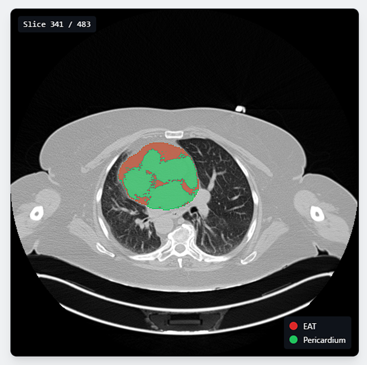
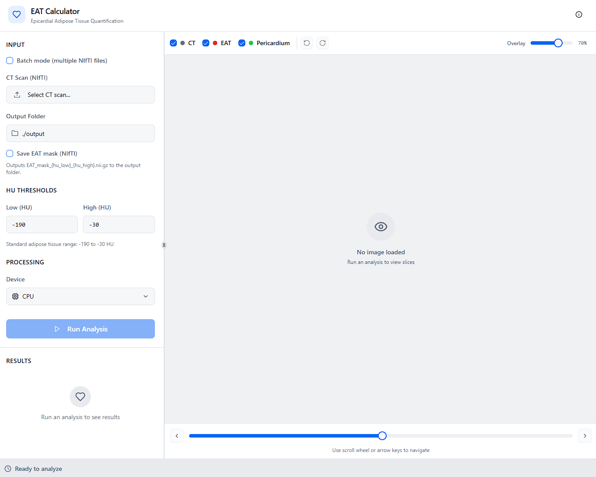
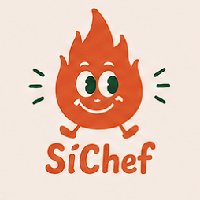
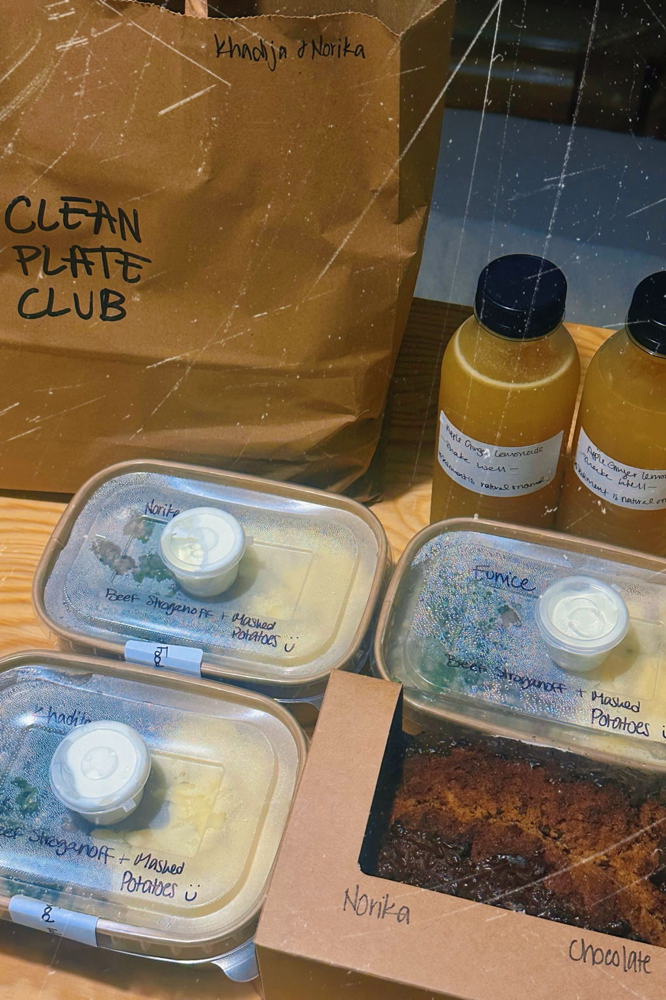
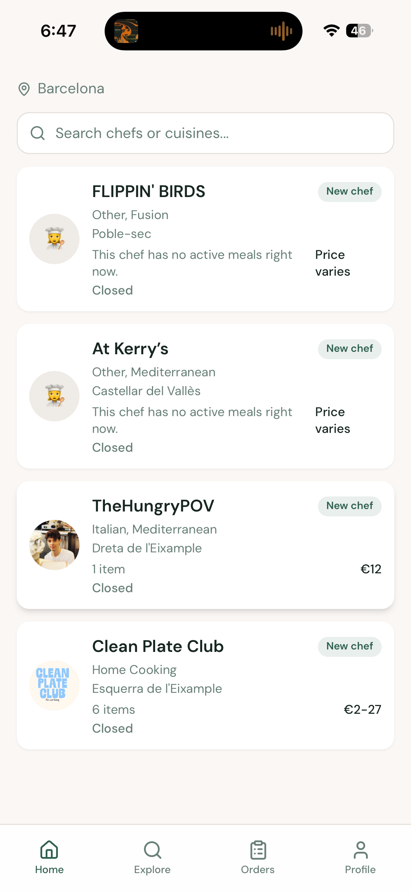
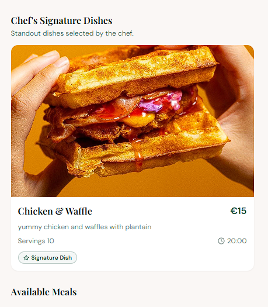

01 / Doctoral research
Seeing the body
as a connected system.
My PhD explores multi-organ imaging and metabolic patterns in type 2 diabetes, combining imaging, clinical data and computational methods.
BrainHeartLiver
I’m a computational biomedical engineer and PhD researcher in Barcelona, using medical imaging and machine learning to study how metabolic disease affects connected organs. I also build research software and co-founded SíChef, bringing that same curiosity into products people can use.
My PhD explores multi-organ imaging and metabolic patterns in type 2 diabetes, combining imaging, clinical data and computational methods.


A tool I developed to quantify epicardial adipose tissue—the fat around the heart—from CT images. It extracts volume and attenuation features for research workflows.
Using pose estimation and joint-angle calculations to recognise exercise sequences and provide real-time feedback through an interactive interface.
Explore the rehabilitation project View the project presentationBuilding automated pipelines to transfer and organise neuroimaging data, connecting practical research needs with reproducible computational workflows.
Explore the MRI pipelineWe compared brain glucose use and blood metabolites in people with type 2 diabetes who had mild cognitive impairment or Alzheimer’s dementia, to understand the metabolic patterns associated with cognitive decline.
First author · K. Hammawa, Q. Martín-Saladich, A. Ciudin, et al.
This study explores whether brain glucose-use patterns can distinguish metabolic phenotypes in type 2 diabetes, and how those phenotypes relate to markers of cognitive impairment.
Co-author
My path started in neuroscience and psychology in Toronto. Working in neuroimaging led me towards biomedical engineering—and the possibilities of using code to ask better questions about human health.
Today, I’m a PhD researcher in Barcelona, working across medical imaging, metabolic health and computational analysis at UPF and VHIR.
Outside the lab: books, travel, lifting weights, and gaming—League of Legends, Marvel Rivals, and Red Dead Redemption 2 are a few favourites.
My food finds on Beli ↗
Food. People. Community.
I’m co-building SíChef, a Barcelona food platform connecting local chefs with people looking to discover their cooking.
As co-founder and CTO, I work on the product and technology behind the experience—from chef profiles and menus to customer ordering and chef tools.
Discover SíChefA glimpse of the customer experience: discover local chefs, explore their menus, and find something you’d love to eat.



Research, biomedical tools, or an interesting idea? Let’s talk.